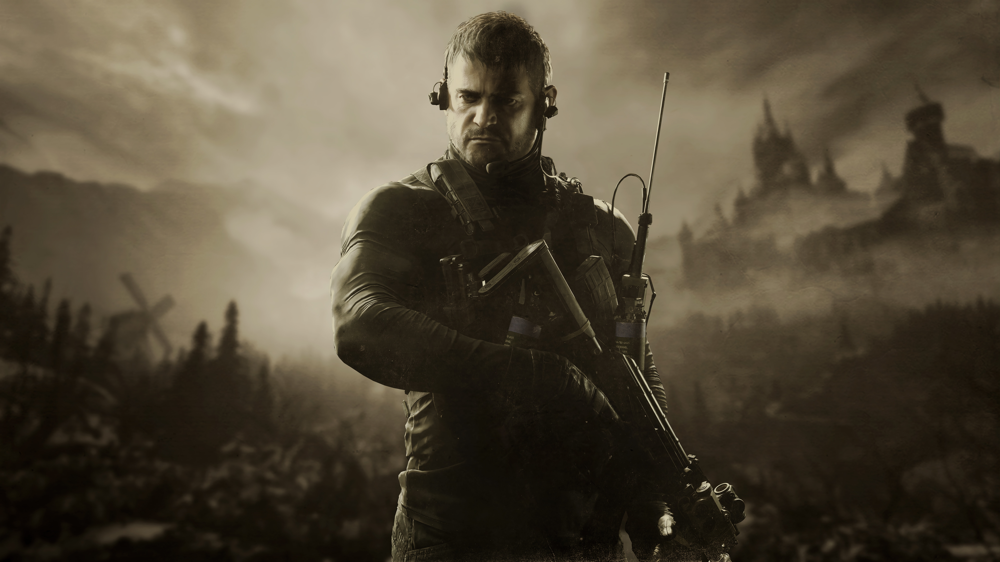
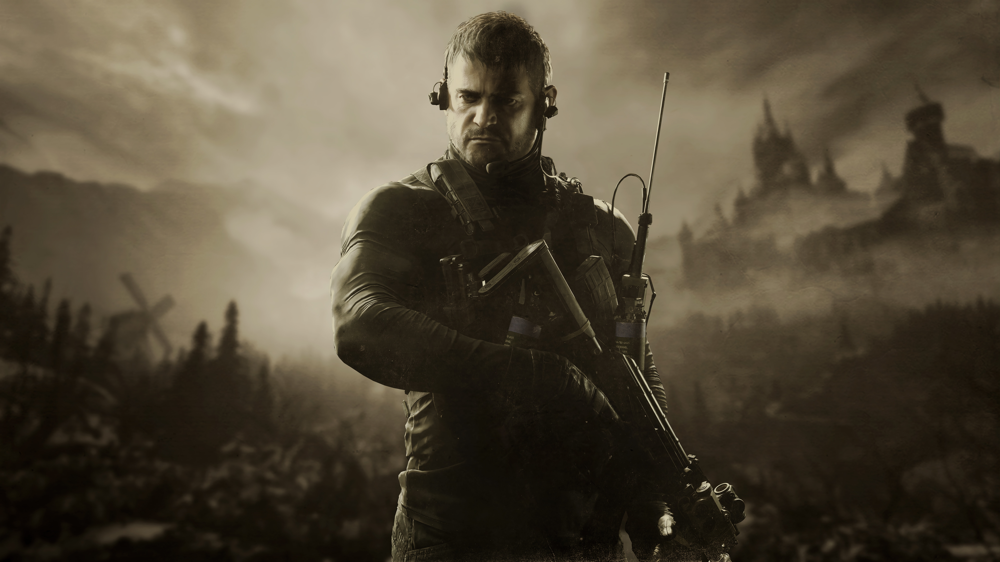

Chris Redfield es uno de los personajes principales de la serie Resident Evil. Es un ex miembro de las Fuerzas Aéreas de los Estados Unidos y cofundador de la organización antiterrorista BSAA (Alianza de Seguridad y Aplicación de la Ley). Chris es conocido por su valentía, habilidades de combate y dedicación para combatir las amenazas bioterroristas. A lo largo de la serie, ha enfrentado numerosos brotes virales y ha trabajado para desmantelar organizaciones criminales que utilizan armas biológicas.
 
